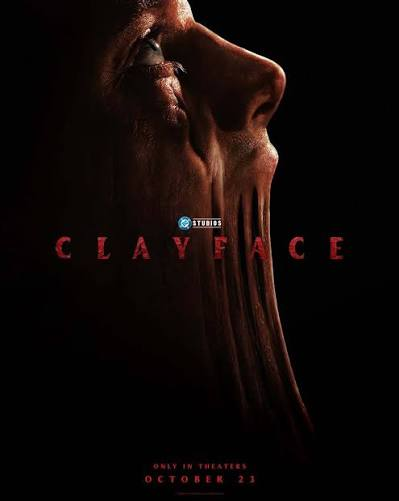
Clayface
2026 • Suspense / Terror
A sombria transformação e vingança de um ator de teatro no submundo de Gotham.
★ 4.7 / 5Seu diário e catálogo de cinema

2026 • Suspense / Terror
A sombria transformação e vingança de um ator de teatro no submundo de Gotham.
★ 4.7 / 5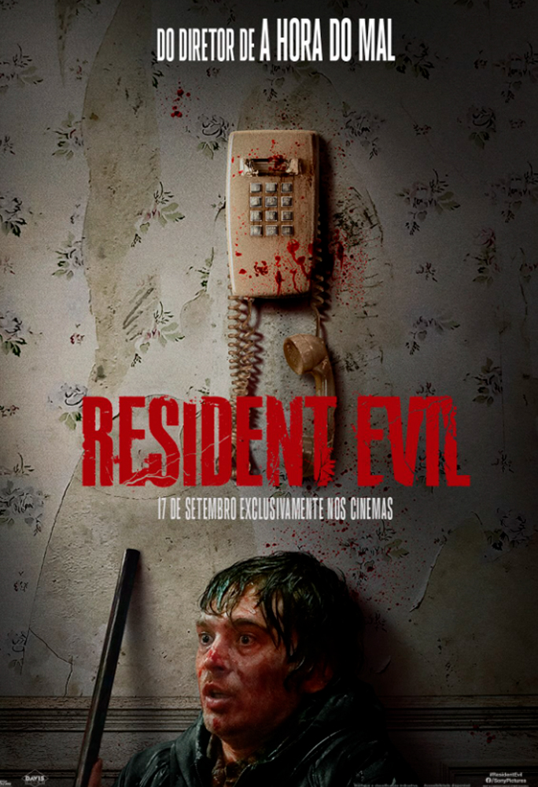
Ação / Terror / Sobrevivência
Uma equipe de elite investiga um complexo biológico e enfrenta surtos mortais.
★ 4.5 / 5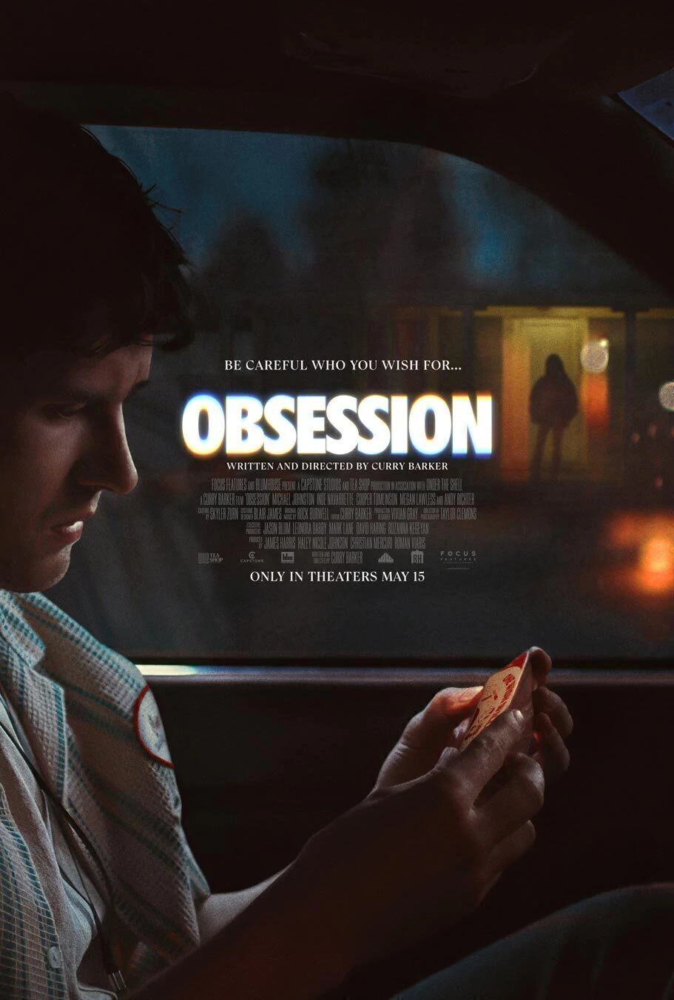
Drama / Mistério
Uma relação intensa e proibida que cruza limites perigosos e afeta vidas inteiras.
★ 4.3 / 5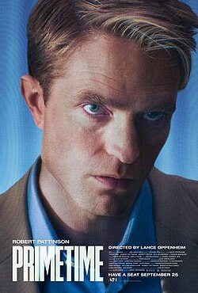
Suspense / Drama
A tensão atinge o pico quando uma invasão toma conta de uma transmissão de TV ao vivo.
★ 4.6 / 5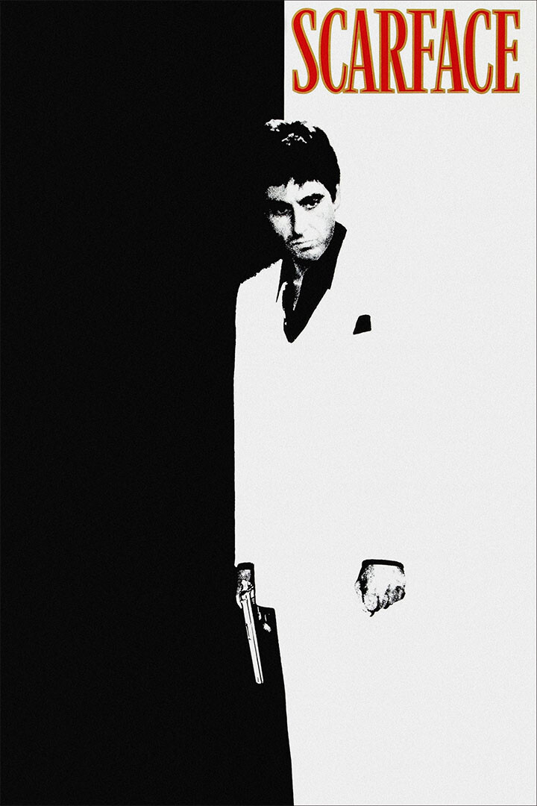
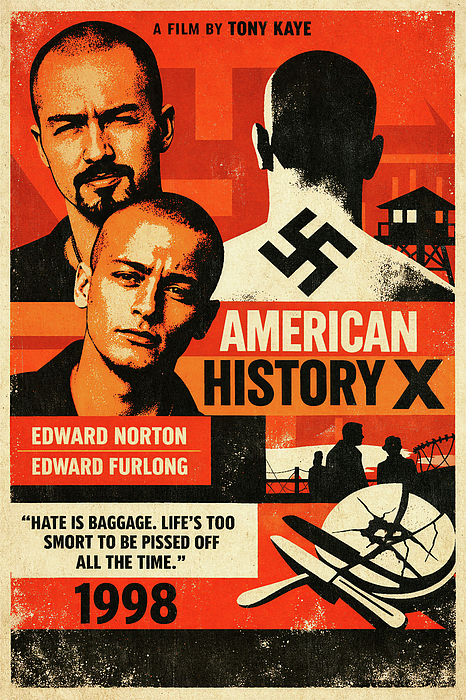
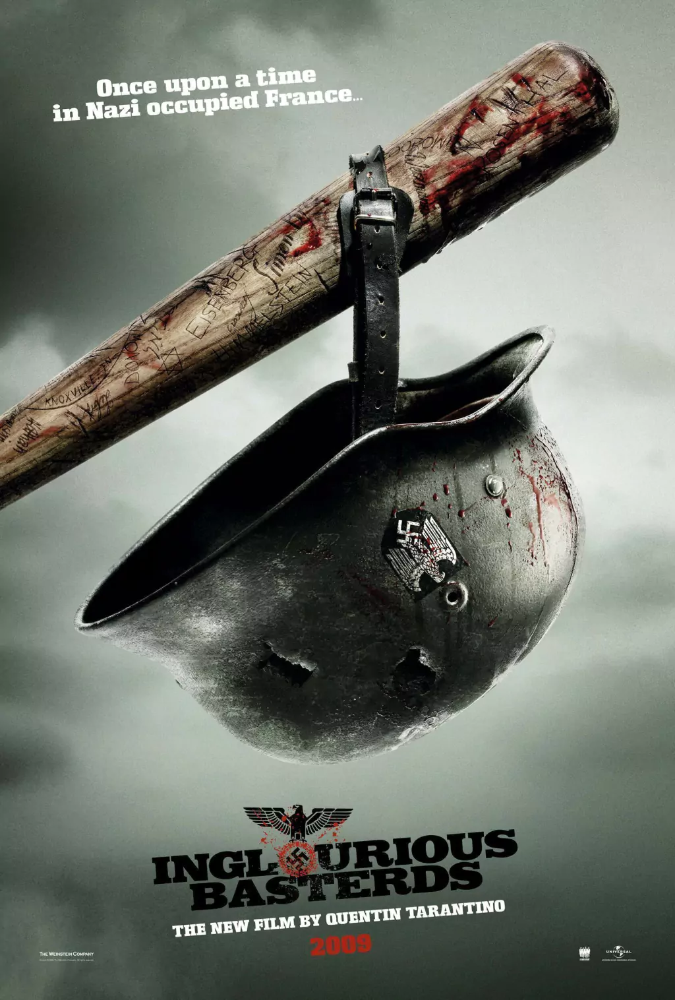
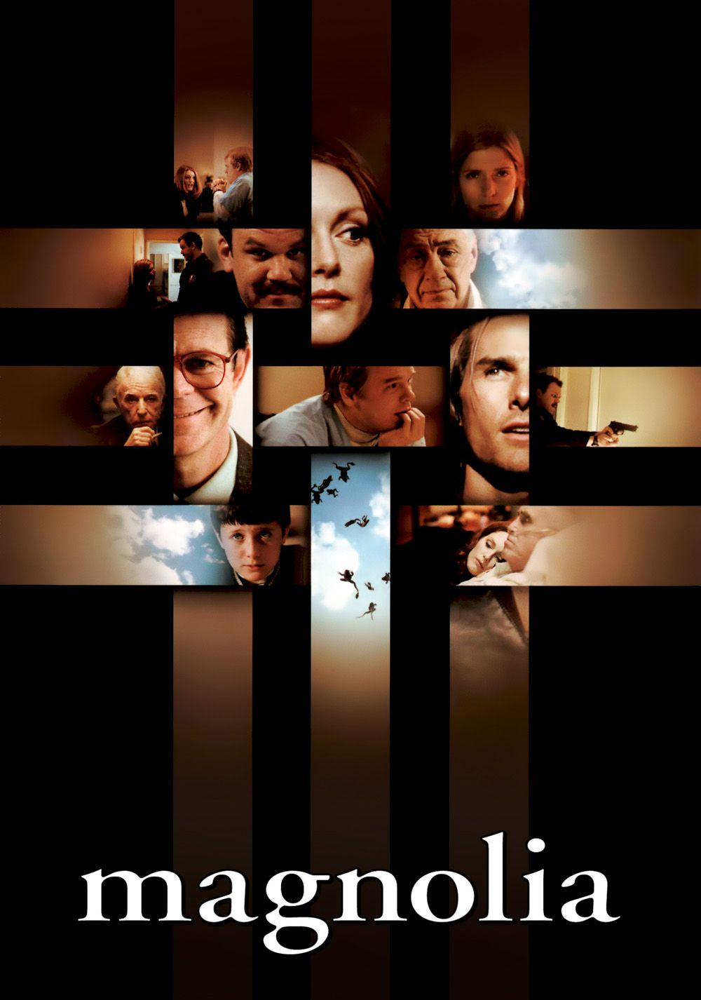
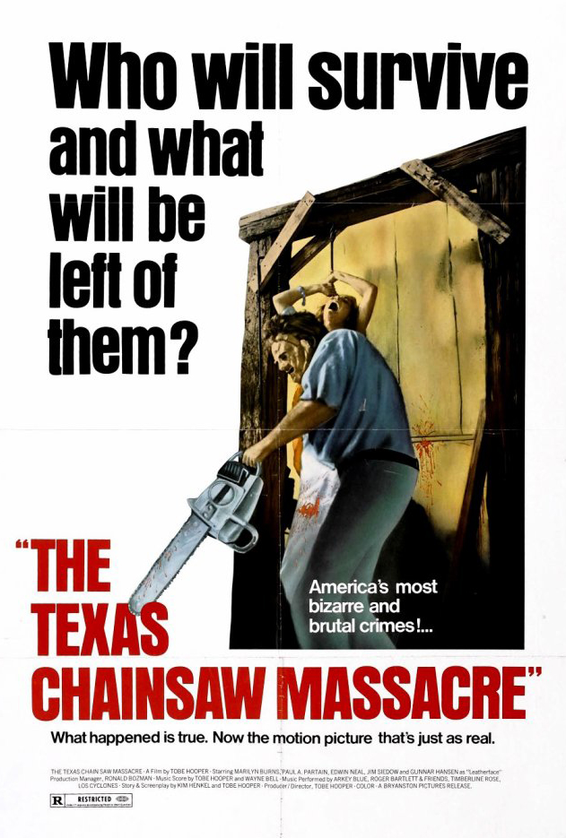
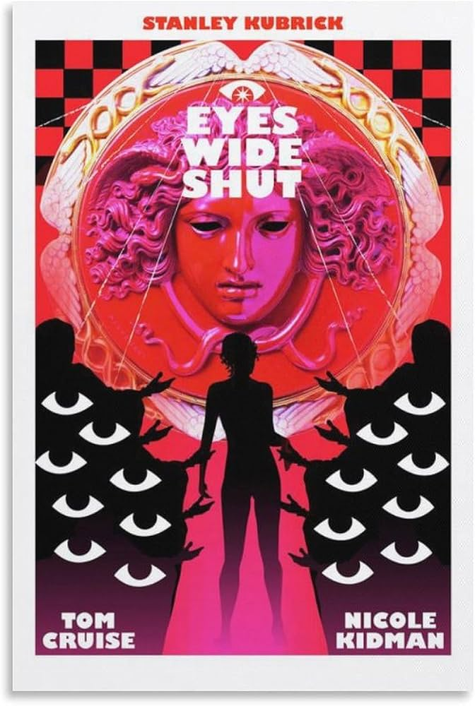
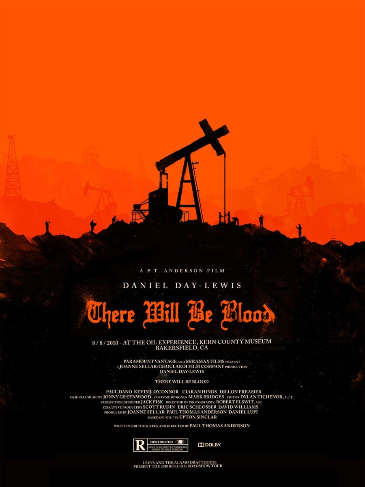

Obras-primas fundamentais que moldaram a história da sétima arte.
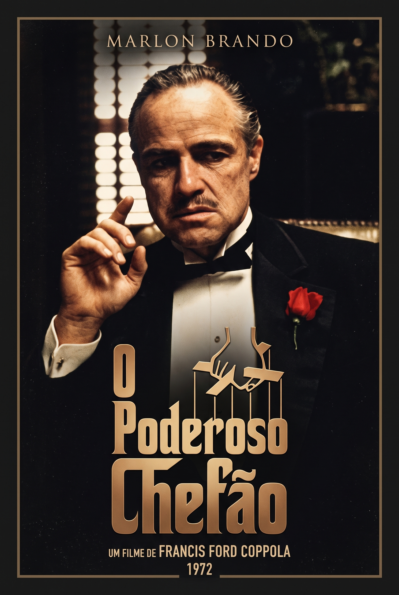
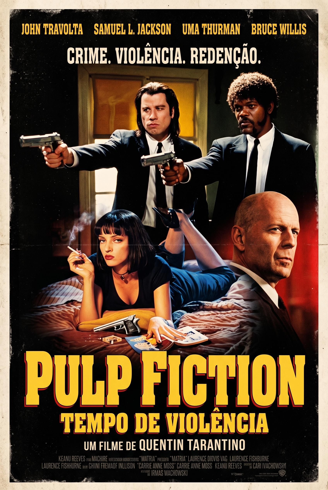
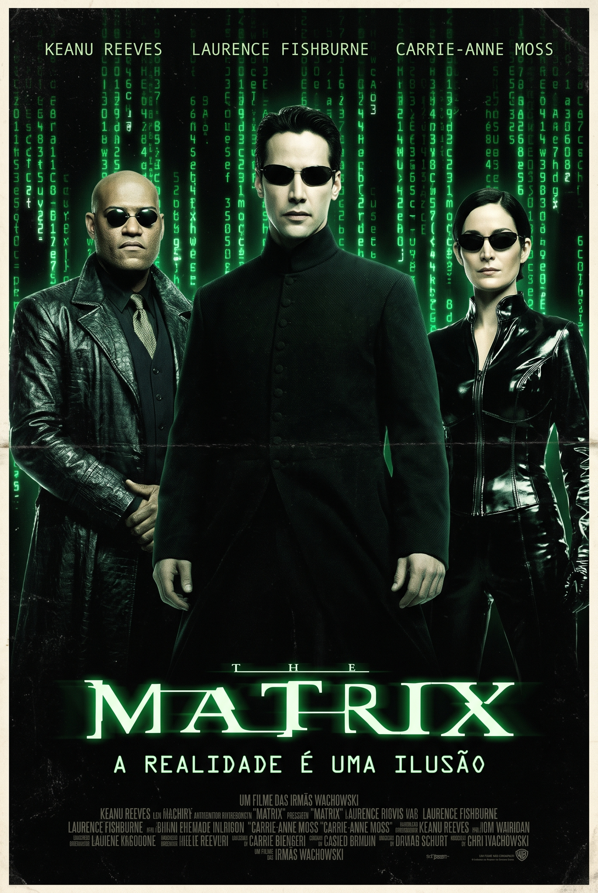
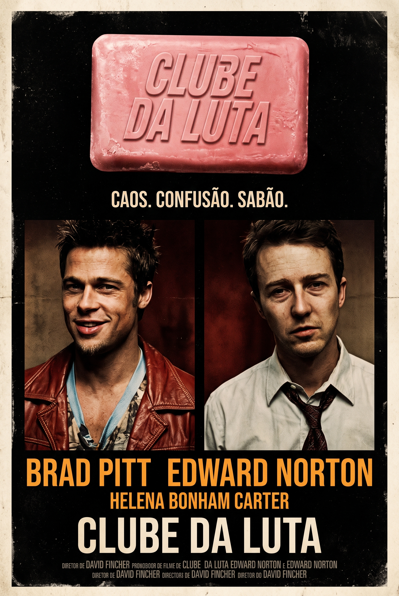
Classificação atualizada com base nas notas atribuídas pelos utilizadores.
| Posição | Título do Filme | Diretor | Ano | Média |
|---|---|---|---|---|
| #1 | Harakiri | Masaki Kobayashi | 1962 | 4.7 / 5 |
| #2 | Vá e Veja | Elem Klimov | 1985 | 4.7 / 5 |
| #3 | 12 Homens e Uma Sentença | Sidney Lumet | 1957 | 4.7 / 5 |
| #4 | Os Sete Samurais | Akira Kurosawa | 1954 | 4.7 / 5 |
| #5 | O Poderoso Chefão | Francis Ford Coppola | 1972 | 4.6 / 5 |
| #6 | Parasita | Bong Joon-ho | 2019 | 4.6 / 5 |
Compartilhe sua opinião sobre as produções cinematográficas com a comunidade.